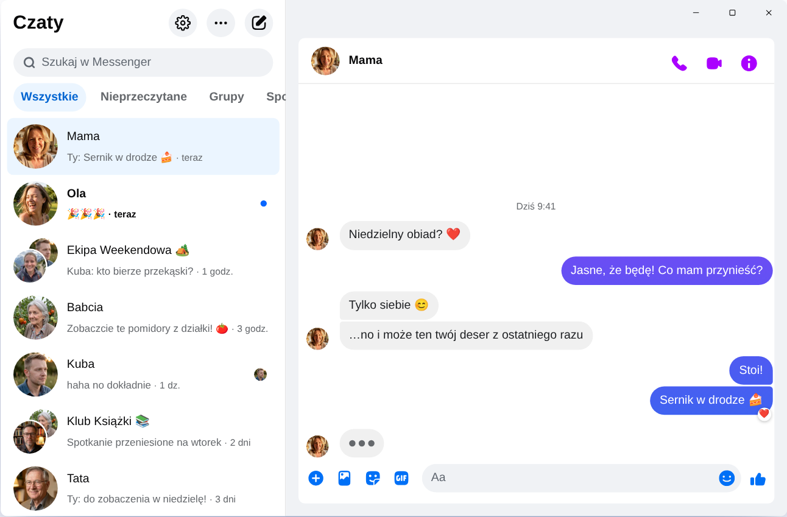

Chatpane / Windows
Aktualizacja: listopad 2026
Jak korzystać z Messengera na komputerze w 2026
Meta wyłączyła aplikację Messenger na Windows 15 grudnia 2025, a messenger.com przekierowuje teraz na Facebooka. Oto co nadal działa na komputerze i laptopie z Windows 10 lub 11.
Darmowa i otwartoźródłowa · Windows 10 i 11 · To nie jest aplikacja Mety
Krótka odpowiedź
Oficjalnej aplikacji Messenger na komputer już nie ma. Meta usunęła ją ze sklepu Microsoft Store, a od kwietnia 2026 Messenger na komputerze działa tylko pod adresem facebook.com/messages, wewnątrz Facebooka.
Jeśli chcesz mieć Messengera w osobnym oknie, bez tablicy i rolek, Chatpane to darmowa, otwartoźródłowa aplikacja na Windows, która pokazuje tylko twoje czaty. To niezależny projekt, nie produkt Mety.
Dlaczego stare poradniki już nie działają
Wiele poradników nadal każe szukać „Messengera” w Microsoft Store albo pobrać instalator Messenger 2250.1 z serwisów z programami. To nic nie da: to właśnie aplikacja, którą Meta wyłączyła w grudniu 2025, a po uruchomieniu tylko przenosi cię na Facebooka.
Nie wpisuj też hasła do Facebooka w programie ani na stronie niewiadomego pochodzenia. Jeśli ktoś oferuje „Messengera na PC” z własnym ekranem logowania, uważaj.
Co się stało z Messengerem na Windows?
W 2024 roku Meta zastąpiła aplikację na Windows spakowaną wersją webową. W październiku 2025 ogłosiła jej wyłączenie i usunęła ją z Microsoft Store, a 15 grudnia 2025 aplikacja przestała działać. W kwietniu 2026 zamknięto też messenger.com. Szczegóły i daty znajdziesz w tekście Messenger na komputer przestał działać.
Możliwości
Jak korzystać z Messengera na Windows
Chatpane na Windows
Chatpane otwiera tego samego Messengera, którego widzisz w przeglądarce, więc wszystkie czaty, grupy, połączenia i zdjęcia są na miejscu i synchronizują się z telefonem. Znika tylko reszta Facebooka.
- Tylko Messenger. Tablica, rolki, Marketplace i wyszukiwarka Facebooka są ukryte.
- Przydatne powiadomienia. Odpowiadaj, reaguj, oznaczaj jako przeczytane albo wyciszaj czat prosto z powiadomienia, bez otwierania okna.
- Pasek zadań i zasobnik. Liczba nieprzeczytanych wiadomości na ikonie, uruchamianie razem z Windows i działanie w zasobniku systemowym po zamknięciu okna.
- Prywatność. Ukryj, że piszesz, ukryj imiona i zdjęcia przy udostępnianiu ekranu i blokuj zapytania analityczne Facebooka (domyślnie włączone).
- Po polsku. Chatpane używa języka komputera, więc jego menu i ustawienia są po polsku.

Jak zainstalować
- Pobierz instalator na Windows. Jeśli twój komputer ma procesor ARM, wybierz instalator ARM64.
- Uruchom go. Instalatory Chatpane na Windows nie mają jeszcze podpisu cyfrowego, więc SmartScreen może pokazać komunikat „System Windows ochronił ten komputer”. Kliknij „Więcej informacji”, a potem „Uruchom mimo to”. Pobieraj Chatpane tylko z chatpane.app albo z GitHuba.
- Zaloguj się na swoje konto Facebook. Czaty pojawią się od razu.
Nie chcesz nic instalować? Wersja przenośna (.zip) działa bez instalatora.
Pytania i odpowiedzi
Pytania o Messengera na komputerze
Czy Chatpane jest darmowy?
Tak. Bez opłat, subskrypcji i reklam. Chatpane jest otwartoźródłowy, na licencji MIT, a jego kod jest publicznie dostępny na GitHubie.
Czy to oficjalna aplikacja Messenger?
Nie. Chatpane to niezależny projekt, niezwiązany z Metą. Pokazuje prawdziwego Messengera z facebook.com/messages w osobnym oknie, więc twoje wiadomości nadal przechodzą przez Messengera i obowiązują zasady Mety.
Czy działa bez konta na Facebooku?
Nie. Od kwietnia 2026 Meta pozwala korzystać z Messengera bez konta na Facebooku tylko w aplikacji na telefon. Na komputerze Chatpane i każda inna metoda wymagają konta, które może zalogować się na facebook.com.
Czy działa na Windows 10?
Tak, na Windows 10 i 11. Chatpane korzysta z Microsoft Edge WebView2, który jest już w Windows 11. Na Windows 10 instalator pobierze go, jeśli go brakuje.
Czy działają rozmowy wideo?
Tak. To pełny Messenger, więc połączenia głosowe i wideo otwierają się w osobnym oknie, tak jak na facebook.com.
Pobierz Chatpane
Darmowa i open source. Pobiera się w kilka sekund - waży tylko około 4 MB.
Dostępne też: przenośny .zip · ARM .exe · ARM .zip
Starszy Mac z Intelem? Intel .dmg
Pełna lista z sumami kontrolnymi znajduje się na
GitHub
- lub brew install --cask kristofferR/tap/chatpane